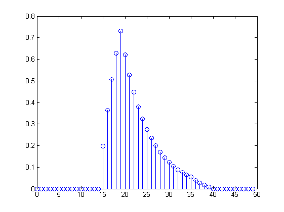

n = -10:20;
d= double(n==0);
stem(n,d)
title('Impulso unidad \delta[n]')
xlabel('n')
axis([-10 20 -0.1 1.1])
u= double(n>=0);
stem(n,u)
title('Escalon unidad u[n]')
xlabel('n')
axis([-10 20 -0.1 1.1])
omega0 =2*pi/11;
x = cos(omega0*n);
stem(n,x)
title('cos(\omega_0n)')
xlabel('n')
plot(n ,x, 'Marker', 'o', 'Markerfacecolor', 'k')
title('cos(\omega_0n)')
grid
alpha = 0.1;
omega0 = 2*pi/11;
x = exp(-alpha*n).*cos(omega0*n);
plot(n ,x, 'Marker', 'o', 'Markerfacecolor', 'r')
title('e^{-\alphan}cos(\omega_0n)')
grid
n = 0:9;
n.*n
n.^2
m = n'
a = [1, 2, 3]
b = [1; 2; 3]
L = 100;
b = 2;
a = 1;
x = a + (b-a)*rand(L, 1)
mu = 1;
sigma = 2;
x = mu + sigma*randn(L, 1);
plot(x, 'Marker', 'o', 'Markerfacecolor', 'r')
title('gaussiana')
grid
n = -20 : 20;
omega0 = 2*pi/7;
x = sin(omega0.*n)/omega0.*n;
x(n == 0) = 1;
stem (n,x)
title('indeterminacion')
xlabel('n')
n = -5 : 25;
h = 0.85.^n.*u;
stem (n,h)
title('respuesta al impulso')
n = 0 : 19;
L = 20;
N = 30;
m = 0 : 30;
z = double(n >= 5);
c = double(n >= 10);
x = z-c;
h = 0.85.^m.*u;
y = conv(x, h);
d=0:N+L-1;
stem(d,y)
p = [0, 0, 0, 0];
for n = 0:3
for k = 0:3
p(n+1) = p(n+1) + exp(1j*2*pi*k*n/4);
end
p(n+1) = p(n+1)/4;
end
ans =
0 1 4 9 16 25 36 49 64 81
ans =
0 1 4 9 16 25 36 49 64 81
m =
0
1
2
3
4
5
6
7
8
9
a =
1 2 3
b =
1
2
3
x =
1.9934
1.3264
1.1372
1.3848
1.5626
1.6338
1.5416
1.3150
1.1593
1.1526
1.1370
1.7098
1.4649
1.1133
1.7009
1.1800
1.8037
1.5140
1.5484
1.2078
1.7846
1.5265
1.5710
1.4220
1.7212
1.0731
1.5949
1.8620
1.4488
1.6526
1.3035
1.6074
1.2789
1.7996
1.7962
1.9541
1.4443
1.4569
1.5998
1.8426
1.0312
1.1873
1.9436
1.9479
1.4530
1.8108
1.9289
1.6727
1.3723
1.4057
1.4388
1.6786
1.4651
1.9533
1.3547
1.3390
1.8959
1.5454
1.7493
1.1249
1.4532
1.0747
1.6633
1.7037
1.9190
1.6601
1.6901
1.8537
1.4679
1.4585
1.8061
1.8248
1.1904
1.0257
1.0568
1.1429
1.1714
1.6258
1.0295
1.4723
1.6784
1.1148
1.2361
1.2891
1.1728
1.3237
1.8011
1.2996
1.7756
1.5528
1.5547
1.7306
1.7736
1.9008
1.1382
1.7941
1.1894
1.0290
1.1274
1.1337
